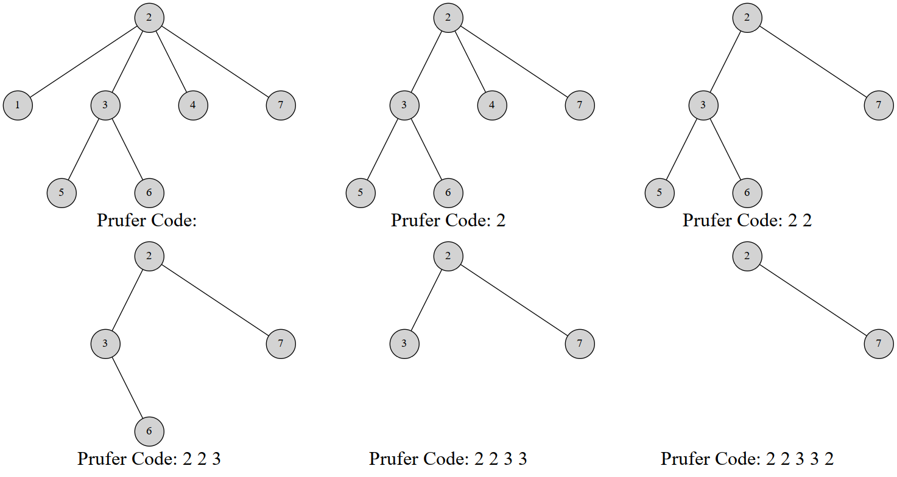

Prufer
???+ note "Note" 本文翻译自 e-maxx Prüfer Code．另外解释一下，原文的结点是从 $0$ 开始标号的，本文按照大多数人的习惯改成了从 $1$ 标号．
这篇文章介绍 Prüfer 序列 (Prüfer code)，这是一种将带标号的树用一个唯一的整数序列表示的方法．
使用 Prüfer 序列可以证明 凯莱公式(Cayley's formula)．并且我们也会讲解如何计算在一个图中加边使图连通的方案数．
注意：我们不考虑含有 $1$ 个结点的树．
Prüfer 序列
引入
Prüfer 序列可以将一个带标号 $n$ 个结点的树用 $[1,n]$ 中的 $n-2$ 个整数表示．你也可以把它理解为完全图的生成树与数列之间的双射．常用组合计数问题中．
Heinz Prüfer 于 1918 年发明这个序列来证明 凯莱公式．
对树建立 Prüfer 序列
Prüfer 是这样建立的：每次选择一个编号最小的叶结点并删掉它，然后在序列中记录下它连接到的那个结点．重复 $n-2$ 次后就只剩下两个结点，算法结束．
显然使用堆可以做到 $O(n\log n)$ 的复杂度
???+ note "实现"
=== "C++"
```cpp
// 代码摘自原文，结点是从 0 标号的
vector
vector<int> pruefer_code() {
int n = adj.size();
set<int> leafs;
vector<int> degree(n);
vector<bool> killed(n);
for (int i = 0; i < n; i++) {
degree[i] = adj[i].size();
if (degree[i] == 1) leafs.insert(i);
}
vector<int> code(n - 2);
for (int i = 0; i < n - 2; i++) {
int leaf = *leafs.begin();
leafs.erase(leafs.begin());
killed[leaf] = true;
int v;
for (int u : adj[leaf])
if (!killed[u]) v = u;
code[i] = v;
if (--degree[v] == 1) leafs.insert(v);
}
return code;
}
```
=== "Python"
```python
# 结点是从 0 标号的
adj = [[]]
def pruefer_code():
n = len(adj)
leafs = set()
degree = [0] * n
killed = [False] * n
for i in range(1, n):
degree[i] = len(adj[i])
if degree[i] == 1:
leafs.intersection(i)
code = [0] * (n - 2)
for i in range(1, n - 2):
leaf = leafs[0]
leafs.pop()
killed[leaf] = True
for u in adj[leaf]:
if killed[u] == False:
v = u
code[i] = v
if degree[v] == 1:
degree[v] = degree[v] - 1
leafs.intersection(v)
return code
```
例如，这是一棵 7 个结点的树的 Prüfer 序列构建过程：

最终的序列就是 $2,2,3,3,2$．
当然，也有一个线性的构造算法．
Prüfer 序列的线性构造算法
线性构造的本质就是维护一个指针指向我们将要删除的结点．首先发现，叶结点数是非严格单调递减的，删去一个叶结点，叶结点总数要么不变要么减 1．
于是我们考虑这样一个过程：维护一个指针 $p$．初始时 $p$ 指向编号最小的叶结点．同时我们维护每个结点的度数，方便我们知道在删除结点的时侯是否产生新的叶结点．操作如下：
- 删除 $p$ 指向的结点，并检查是否产生新的叶结点．
- 如果产生新的叶结点，假设编号为 $x$，我们比较 $p,x$ 的大小关系．如果 $x>p$，那么不做其他操作；否则就立刻删除 $x$，然后检查删除 $x$ 后是否产生新的叶结点，重复 $2$ 步骤，直到未产生新节点或者新节点的编号 $>p$．
- 让指针 $p$ 自增直到遇到一个未被删除叶结点为止；
正确性
循环上述操作 $n-2$ 次，就完成了序列的构造．接下来考虑算法的正确性．
$p$ 是当前编号最小的叶结点，若删除 $p$ 后未产生叶结点，我们就只能去寻找下一个叶结点；若产生了叶结点 $x$：
- 如果 $x>p$，则反正 $p$ 往后扫描都会扫到它，于是不做操作；
- 如果 $x<p$，因为 $p$ 原本就是编号最小的，而 $x$ 比 $p$ 还小，所以 $x$ 就是当前编号最小的叶结点，优先删除．删除 $x$ 继续这样的考虑直到没有更小的叶结点．
算法复杂度分析，发现每条边最多被访问一次（在删度数的时侯），而指针最多遍历每个结点一次，因此复杂度是 $O(n)$ 的．
实现
=== "C++"
```cpp
// 从原文摘的代码，同样以 0 为起点
vector
void dfs(int v) {
for (int u : adj[v]) {
if (u != parent[v]) parent[u] = v, dfs(u);
}
}
vector<int> pruefer_code() {
int n = adj.size();
parent.resize(n), parent[n - 1] = -1;
dfs(n - 1);
int ptr = -1;
vector<int> degree(n);
for (int i = 0; i < n; i++) {
degree[i] = adj[i].size();
if (degree[i] == 1 && ptr == -1) ptr = i;
}
vector<int> code(n - 2);
int leaf = ptr;
for (int i = 0; i < n - 2; i++) {
int next = parent[leaf];
code[i] = next;
if (--degree[next] == 1 && next < ptr) {
leaf = next;
} else {
ptr++;
while (degree[ptr] != 1) ptr++;
leaf = ptr;
}
}
return code;
}
```
=== "Python" ```python # 同样以 0 为起点 adj = [[]] parent = [0] * n
def dfs(v):
for u in adj[v]:
if u != parent[v]:
parent[u] = v
dfs(u)
def pruefer_code():
n = len(adj)
parent[n - 1] = -1
dfs(n - 1)
ptr = -1
degree = [0] * n
for i in range(0, n):
degree[i] = len(adj[i])
if degree[i] == 1 and ptr == -1:
ptr = i
code = [0] * (n - 2)
leaf = ptr
for i in range(0, n - 2):
next = parent[leaf]
code[i] = next
if degree[next] == 1 and next < ptr:
degree[next] = degree[next] - 1
leaf = next
else:
ptr = ptr + 1
while degree[ptr] != 1:
ptr = ptr + 1
leaf = ptr
return code
```
Prüfer 序列的性质
- 在构造完 Prüfer 序列后原树中会剩下两个结点，其中一个一定是编号最大的点 $n$．
- 每个结点在序列中出现的次数是其度数减 $1$．（没有出现的就是叶结点）
用 Prüfer 序列重建树
重建树的方法是类似的．根据 Prüfer 序列的性质，我们可以得到原树上每个点的度数．然后也可以得到编号最小的叶结点，而这个结点一定与 Prüfer 序列的第一个数所对应的点连接．然后我们同时将这两个结点的度数减一．
讲到这里也许你已经知道该怎么做了．每次我们选择一个度数为 $1$ 的编号最小的结点，与当前枚举到的 Prüfer 序列的点连接，然后同时减掉两个点的度．到最后我们剩下两个度数为 $1$ 的点，其中一个是结点 $n$．把它们连上．使用堆维护这个过程，在节点度数下降的过程中如果发现度数减到 $1$ 就把这个结点添加到堆中，这样做的复杂度是 $O(n\log n)$ 的．
???+ note "实现"
```cpp
// 原文摘代码
vector
set<int> leaves;
for (int i = 0; i < n; i++)
if (degree[i] == 1) leaves.insert(i);
vector<pair<int, int>> edges;
for (int v : code) {
int leaf = *leaves.begin();
leaves.erase(leaves.begin());
edges.emplace_back(leaf, v);
if (--degree[v] == 1) leaves.insert(v);
}
edges.emplace_back(*leaves.begin(), n - 1);
return edges;
}
```
线性时间重建树
同线性构造 Prüfer 序列的方法．在删度数的时侯会产生新的叶结点，于是判断这个叶结点与指针 $p$ 的大小关系，如果更小就优先考虑它．
实现
// 原文摘代码
vector<pair<int, int>> pruefer_decode(vector<int> const& code) {
int n = code.size() + 2;
vector<int> degree(n, 1);
for (int i : code) degree[i]++;
int ptr = 0;
while (degree[ptr] != 1) ptr++;
int leaf = ptr;
vector<pair<int, int>> edges;
for (int v : code) {
edges.emplace_back(leaf, v);
if (--degree[v] == 1 && v < ptr) {
leaf = v;
} else {
ptr++;
while (degree[ptr] != 1) ptr++;
leaf = ptr;
}
}
edges.emplace_back(leaf, n - 1);
return edges;
}
通过这些过程其实可以理解，Prüfer 序列与带标号无根树建立了双射关系．
Cayley 公式 (Cayley's formula)
完全图 $K_n$ 有 $n^{n-2}$ 棵生成树．
怎么证明？方法很多，但是用 Prüfer 序列证是很简单的．任意一个长度为 $n-2$ 的值域 $[1,n]$ 的整数序列都可以通过 Prüfer 序列双射对应一个生成树，于是方案数就是 $n^{n-2}$．
图连通方案数
Prüfer 序列可能比你想得还强大．它能创造比 凯莱公式 更通用的公式．比如以下问题：
一个 $n$ 个点 $m$ 条边的带标号无向图有 $k$ 个连通块．我们希望添加 $k-1$ 条边使得整个图连通．求方案数．
证明
设 $s_i$ 表示第 $i$ 个连通块内点的数量．我们考虑对 $k$ 个连通块构造 Prüfer 序列．由于两个连通块之间的连接方法很多，这并不是普通的 Prüfer 序列．于是不妨假设 $d_i$ 为第 $i$ 个连通块的度数．由于度数之和是边数的两倍，于是 $\sum_{i=1}^kd_i=2k-2$．则对于给定的 $d$ 序列构造 Prüfer 序列的方案数是
$$ \binom{k-2}{d_1-1,d_2-1,\cdots,d_k-1}=\frac{(k-2)!}{(d_1-1)!(d_2-1)!\cdots(d_k-1)!} $$
对于第 $i$ 个连通块，它的连接方式有 ${s_i}^{d_i}$ 种，因此对于给定 $d$ 序列使图连通的方案数是
$$ \binom{k-2}{d_1-1,d_2-1,\cdots,d_k-1}\cdot \prod_{i=1}^k{s_i}^{d_i} $$
现在我们要枚举 $d$ 序列，式子变成
$$ \sum_{d_i\ge 1，\sum_{i=1}^kd_i=2k-2}\binom{k-2}{d_1-1,d_2-1,\cdots,d_k-1}\cdot \prod_{i=1}^k{s_i}^{d_i} $$
好的这是一个非常不喜闻乐见的式子．但是别慌！我们有多元二项式定理：
$$ (x_1 + \dots + x_m)^p = \sum_{\substack{c_i \ge 0 ,\ \sum_{i=1}^m c_i = p}} \binom{p}{c_1, c_2, \cdots ,c_m}\cdot \prod_{i=1}^m{x_i}^{c_i} $$
那么我们对原式做一下换元，设 $e_i=d_i-1$，显然 $\sum_{i=1}^ke_i=k-2$，于是原式变成
$$ \sum_{e_i\ge 0，\sum_{i=1}^ke_i=k-2}\binom{k-2}{e_1,e_2,\cdots,e_k}\cdot \prod_{i=1}^k{s_i}^{e_i+1} $$
化简得到
$$ (s_1+s_2+\cdots+s_k)^{k-2}\cdot \prod_{i=1}^ks_i $$
即
$$ n^{k-2}\cdot\prod_{i=1}^ks_i $$
为答案．